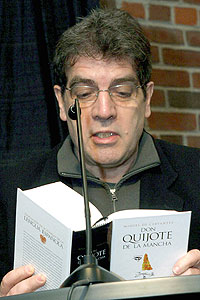

Un español en Nueva York, Eduardo Lago, gana el Nadal con su novela "Llámame Brooklyn"
IBLNEWS y AGENCIAS
 |
El escritor español Eduardo Lago, que el pasado viernes logró el prestigioso Premio Nadal con su primera novela, "Llámame Brooklyn", lleva casi veinte años viviendo en Nueva York, donde da clases de literatura española. Según ha declarado, durante esta larga estancia en la ciudad ha constatado que “no hay patria sin idioma”.
Lago asegura que cuando llegó fue muy bien acogido, pero ha echado de menos “la proximidad al castellano, pues se hace difícil escribir una novela alejado de tu propia lengua”. “Mi gran drama es que me faltaba el castellano, lo necesitaba, no lo oía y me sentía desorientado por eso".
Al recibir el premio, Lago ha recordado la experiencia del poeta polaco Milos, exiliado en Estados Unidos y que nunca quiso escribir en inglés porque “la lengua era la única patria que le quedaba”.
Lago evoca la riqueza de la literatura de los hispanos que escriben hoy en inglés, la cual arranca con Óscar Hijuelos, quien fue “el primero en dar el aldabonazo, todos los autores que escriben en inglés, pero con un paraíso perdido, la lengua de Cervantes”.
Cree que “la mayoría de los escritores latinos están aquejados por una enfermedad muy grave: la necesidad del mercado, que les ha convertido en un producto de marketing”.
"Llámame Brooklyn" es la historia de un periodista de Nueva York que recibe la noticia de que su amigo Gal Ackerman, 25 años mayor que él, ha muerto. Esto le obliga a cumplir un pacto tácito: rescatar de entre centenares de cuadernos abandonados por Ackerman en un motel de Brooklyn una novela a medio terminar y entregarla a una única lectora, la rusa Nadia Orlov, de quien hace años nadie sabe nada.
Lago comenta que esta obra no tiene nada de autobiográfica, aunque se nutre de su situación vital: “Como escritor estoy en el punto de convergencia entre la literatura castellana y la norteamericana, la tradición realista española y experimentalista estadounidense”.
De esta última, destaca a Don Delillo por “su manera de reflexionar sobre la historia y por ser, además, un escritor encerrado en sí mismo”.
Además de esa “gran tradición americana”, Lago se considera heredero de su “padrastro” literario, Felipe Alfau, autor español que vivió en Nueva York y escribió en inglés y al que convirtió en personaje de ficción para la novela.
Llámame Brooklyn nació “poco a poco, casi como una revelación”, partiendo de un lugar, un bar más o menos recreado, y unos personajes, salidos de las centenares de anotaciones que comenzó a tomar a su llegada a Nueva York.
Tras buscar la mejor manera de canalizarlos, agrega, “me di cuenta de que esa forma era la ficción”.
El ganador del Nadal, el premio literario más antiguo de los convocados en España, subraya la dificultad que le supuso la estructura del libro, pues está concebido como “una constelación de historias que convergen: una historia de amor, amistad y soledad, así como un canto al misterio y el poder de la palabra escrita”.
Nacido en Madrid en 1954, es titulado por la Universidad Autónoma de Madrid y graduado por la Universidad de Nueva York, Lago ha mostrado especial interés en la teoría de la traducción, la estética del Barroco y las relaciones entre los escritores de ficción hispanos de EEUU y los iberoamericanos. Es autor de "Cuentos dispersos", una colección de relatos; "Cuaderno de México", memoria de su viaje a Chiapas; y "Dark and Yellow Rooms", un ensayo ilustrado sobre pintura.
Además ha traducido obras de Charles Brockden-Brown, Hamlin Garland, William Dean Howells, Henry James, Sylvia Plath, Christopher Isherwood, Junot Díaz y John Barth.